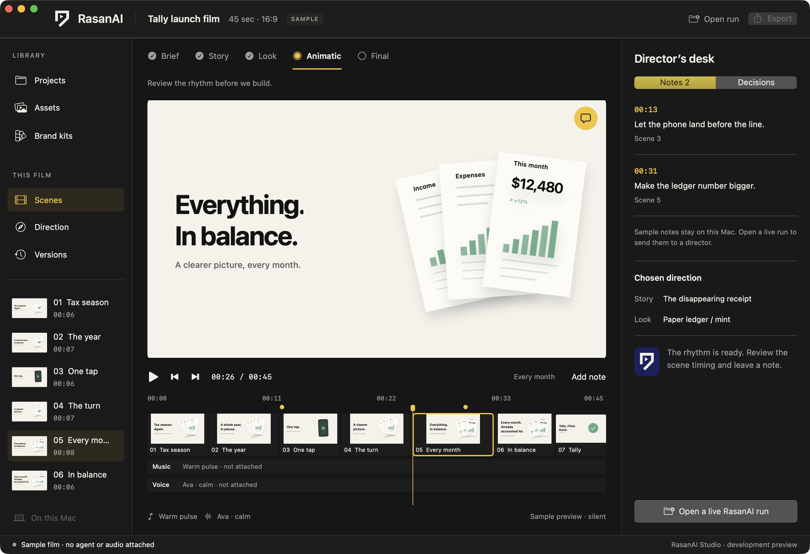

RasanAI Studio / Mac
A desk for your films.
Local projects. Native settings. Your director and review notes in one place.
Download for MacCommunity beta. Not Apple-notarized; macOS approval may be required. Provider charges may apply.
Before you install
Drag the app to Applications. Agent CLIs/sign-in, FFmpeg and HyperFrames tools remain external. Real-agent generation is unverified; managed Macs may block this unnotarized build.
If build 7 crashes, replace it manually with this build. Your separate project library stays intact. Working installs get signed Sparkle updates in Settings → Runtime.
Release notes, checksum and installation guide ↗